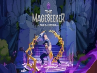

Anunciado The Mageseeker
Luciano Mezher
Desarrollado por Digital Sun, los creadores de Moonlighter, The Mageseeker es un RPG de acción y gráficas pixeladas en 2D ambientado en Demacia, un poderoso reino del mundo de Runaterra que intenta reprimir y prohibir la magia mientras ellos mismos la utilizan para mantener el orden. Jugarás como Sylas, un mago renegado cuya voluntad de venganza hará añicos la engañosa paz de Demacia; una paz construida con la sangre y el sudor de los magos. The Mageseeker brinda una experiencia de jugabilidad llena de acción y fantasía para quienes busquen vivir una historia de poder, identidad y justicia.